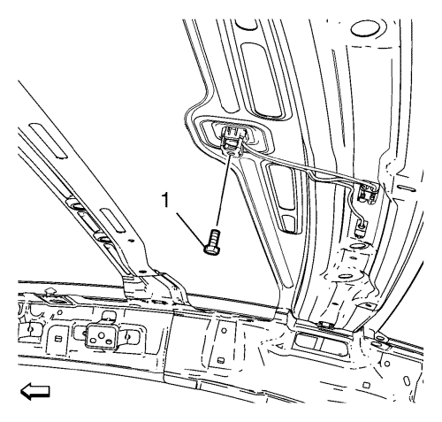

Desmonte el panel de revestimiento interior del techo. Consultar
Sustitución del panel de revestimiento interior del techo : Sin techo corredizo → Con techo corredizo .

Desmonte el perno de la base de la antena de la radio (1).
Monte el perno de la base de la antena de la radio (1) y apriételo a 9 N·m (80 lib. pulg.).
Monte el panel de revestimiento interior del techo. Consultar
Sustitución del panel de revestimiento interior del techo : Sin techo corredizo → Con techo corredizo .